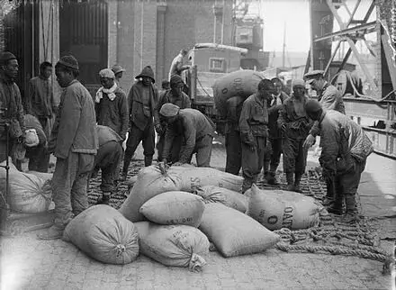
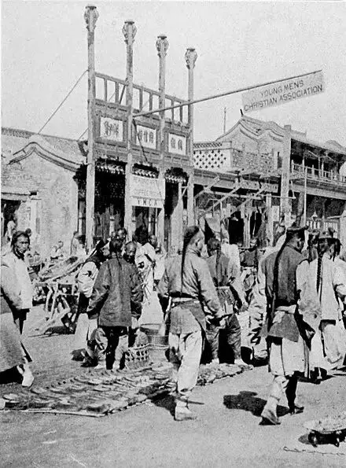
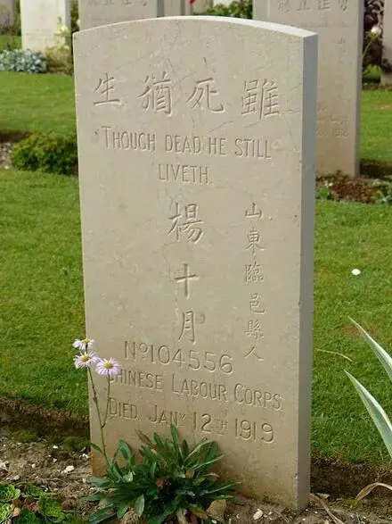

昨天，就在我们沉溺在购物狂欢的时候。
法国政府在巴黎凯旋门举行隆重的仪式，78个国家元首和政府首脑齐聚巴黎，纪念一战结束100周年。
仪式上一个华裔女孩用汉语念了一封中国劳工的信，以纪念100年前中国劳动队做出的贡献。
不知道其他人有什么感觉，我觉得我的脸有些发烫，别人在纪念我们的英雄，而我们竟从来不知道他们的存在。
我学习不差，历史书上重要事件的意义、标志、导火线背的滚瓜烂熟，但是这件事我还是第一次听说。
他们对于历史的这份态度令人钦佩，他们对于小人物的那份尊重让人汗颜。
我们的历史教育太过于空大和谄媚，缺乏对小人物和历史真相的尊重，我虽然背了很多东西，除了分数和对小日本和西方殖民者的仇视，其他什么也没有。
所以，今天加推一篇，和大家一起补一下那段历史，他们不应给被自己的同胞忘记！
以下内容主要根据wikiwand的内容整编而成
一战期间，西线惨烈的战斗使得交战国都曾经历过兵员不足的情况。
为了能够腾出更多的士兵送往前线战斗，英法两国都曾在殖民地和中立国家招募劳工代替一般的士兵进行诸如搬运、修路、挖掘等技术含量低的体力劳动。
截止一战结束，除了中国，英法两国总计还从各殖民地以及印度、埃及和南非招募了大约441000名劳工。
中国方面也很愿意为英法提供劳工，这样既可省去派遣军队参战的费用，又能在战后谈判中赢得一定国际地位。
1915年6月，袁世凯（时任总统）心腹梁士诒向英国提议华工计划，提出中国向英国派出华工，但英国拒绝建议。
梁士诒转而与法国接洽，当时法国人力资源缺乏，亦考虑利用华工，立即接受提议。
同年11月，法国陆军部正式决定实施招募华工计划，其后任命退役少校陶履德为代表，组织陶履德招工团到中国招募工人。
梁士诒则成立惠民公司，承办招募事谊，与陶履德招工团在1916年5月14日签约。
1916年5月14日，法国方面与中国签订了关于雇佣5万名劳工的合同。
经过了简单的军事训练后，第一批劳工于6月在天津登船，前往法国马赛。
当第一批中国劳工到达法国马赛港的时候，法国日报在1916年8月22号的头版新闻上这样描述：
这些华工是通过仔细挑选招来法国的，他们大部分来自中国的北方，他们比安南人更加能忍受我们国家的气候。另外，医疗体检报告结果认为绝大部分的华工身体健壮，这对我们国家继续在那儿招工是一个好消息。
英国战时内阁在1916年批准征募中国劳工，并将劳工部队正式命名为“Chinese Labour Corps”，即中国劳工旅。
1916年10月31日，英国方面在英属威海卫设立招募办事处，由一位在中国生活了28年的前铁路工程师——托马斯·J·伯恩负责。
英军中国劳工旅的两名指挥官是布莱恩·查尔斯·费尔法克斯上校和R·L·普尔东上校，二人都曾在义和团起义时服役于英军威海卫团。
中国劳工们则主要来自山东省，也有部分来自辽宁、吉林、江苏、湖北、湖南、安徽和甘肃等地 。
第一批英军中国劳工旅的1088名人员于1917年1月18日从威海卫启航前往法国，原本的航行路线是经苏伊士运河进入地中海，然后抵达马赛，但最后计划被紧急改变为乘船横跨太平洋，经加拿大后再穿过大西洋抵达欧洲。
至1917年底，中国劳工旅已有5万4千名劳工在法国和比利时为英军工作，到1918年11月一战结束时则增长到了9万6千人。
法国原本计划征召5万人，但最后只得到了4万名中国劳工，其中1万人后来转调到美国。
英军招募的劳工主要负责为前线部队提供各种低技术含量的支持，包括搬运货物、建造营房、挖掘战壕、装填沙袋、铺设铁路、修建公路等，但是也有部份劳工进行了技术含量更高的工作，比如修理军用车辆，维护火炮等武器。
△中国劳工在英军皇家坦克团的中央车间进行维修工作。
另一部分劳工则被需要劳动力的企业公司招收，例如施奈德公司和雷诺公司，还有的被推荐至港口管理部门。
一战停火半年后，中国劳工旅仍保留有8万名工人，继续担负清理战场的任务，诸如填埋弹坑、挖掘哑弹、收卷铁丝网、掩埋尸体等。
劳工旅的司令部位于皮卡第的滨海努瓦耶尔，该地还专门为中国劳工设有医院和临时拘留所。

△滨海布洛涅，1917年8月12日，中国劳工在英军军官的监督下将一袋袋的燕麦装车
在滨海布洛涅、加莱和敦克尔克等法国北部城市都设有中国劳工的营房。
工人们住在由士兵守卫的营房里，每500人组成一支劳工队，其中25人是承担管理职责的英国官员。
中国劳工每天工作10小时，每周工作6天半，逢中国传统节日放假。
劳工虽然不属于正规军队，但是依然受军法军纪约束，平日也要穿着工作制服，与平民区别。
种族歧视在二十世纪一直是一大社会问题，在欧洲的中国劳工难免也受到了不公的待遇。
华工多被直接当做苦力使用，华工的工资一般在每日1至3法郎，低于英军收入最低等级的士兵。
当时因为歧视，华工与法国人、黑人曾出现过很多冲突。
△几名劳工表演传统戏曲娱乐其他劳工和部分英军士兵，可以看到英国与中国观众被一道铁丝网分开。照片摄于埃塔普勒，1918年6月。
华工由于普遍缺少娱乐活动，赌博便开始盛行，甚至因此发生过流血事件。
在英国政府的安排下，基督教青年会的传教士志愿者进驻劳工旅，传教同时也负责主持工人们的福利及教育工作，颇受欢迎。

△北京中华基督教青年会总部，以基督“为世人服务”的精神，根据社会人群（尤其是弱势群体）的需要，从事各种各样的社会服务工作。这些服务工作，是以“促进大众德、智、体、群全人成长”的理念作导向，服务人群不分性别、年龄、国籍、种族和宗教信仰。
劳工旅并没有参加战斗。
根据英国和法国负责征募人员的记录，中国劳工旅中有大约2000人在第一次世界大战期间死亡，大部分死于1918到1919年的西班牙流感大流行，而有些则是敌方袭击时被杀，或在履行职务时受伤而丧亡。
他们的工作是战场上最不起眼的工作，但其重要性无法估量，他们也需要极大的勇气去面对到处是鲜血和眼泪的战场。
法国前总统希拉克在评价一战华工时曾说：
“任何人都不会忘记，这些远道而来，在一场残酷的战争中与法兰西共命运的勇士，他们以自己的灵魂与肉体捍卫了法兰西的领土、理念和自由。”
阵亡的中国劳工在法国北部与比利时的大约40处公墓共有2000座墓碑。
△位于法国北部滨海努瓦耶尔的英军华人公墓入口
最大的一处中国劳工公墓位于法国滨海努瓦耶尔，墓地有两座中国赠送的石狮守护，共有842座为中国劳工设立的墓碑。
这些墓碑上都刻有中文墓志铭，以“流芳百世”、“至死忠诚”、“勇往直前”和“虽死犹生”字样最为普遍。

△位于滨海努瓦耶尔的另一个墓碑
战争结束后，大多数劳工都被分批遣返回国，仅有5000至7000人留在了法国，成为日后巴黎华裔社区的前身。
历史往往都是大事不大，小事不小，我们太过于关注那些历史中的大人物，却常常遗忘这些默默无闻的英雄。
原来，眼高手低总想做no1，动不动就瞧不起卑微的农名工、洗碗工的傲慢，动不动就要将别人驱赶的无情，早从我们的历史教育就已经开始了。
中国劳工旅不应被我们遗忘，当有一天，我们的历史教育能够真正珍重他们的尊严和价值时，人大代表才能真的俯下身子关心普通人，普通人也才能洋溢着笑容去做那些看上去“微不足道”的事。
因为，他们知道自己所做的在历史中是有价值的。

这里没有挑逗你眼目情欲的小鲜肉
也没有挑动你肉体情欲的段子
更没有膨胀你今生骄傲的鸡血
我们只在乎那些最质朴真诚的作品
在那里我们才能恢复真正的想象力
我们也坚信这才是我们真正需要的

ID:Six_hundred_hits
长按二维码，一键关注
【六百击】
-END-
电影评论
尽情分享朋友圈

苹果打赏通道
小提示：文末广告是腾讯配送广告，内容与本号无关，但您的每次点击（无需反复点）都会给平台带来几毛收益，欢迎您点击支持六百击。